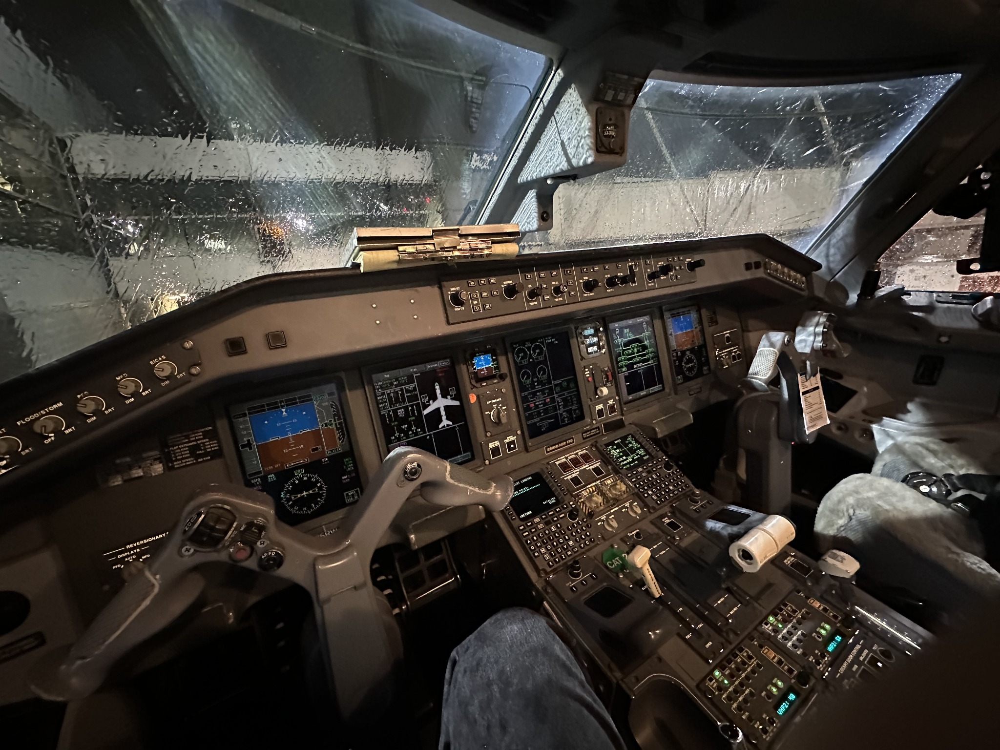
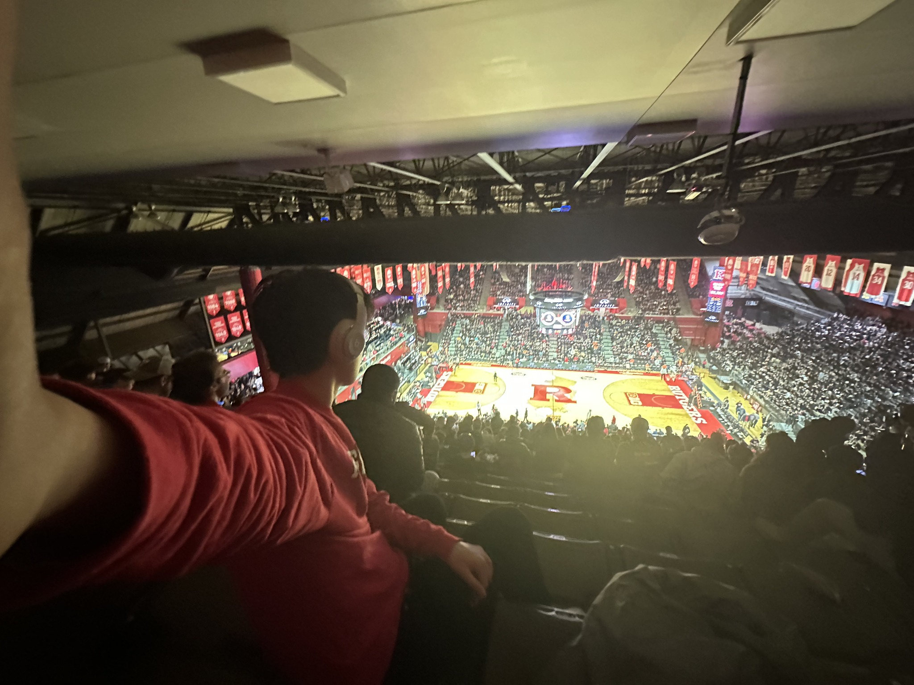
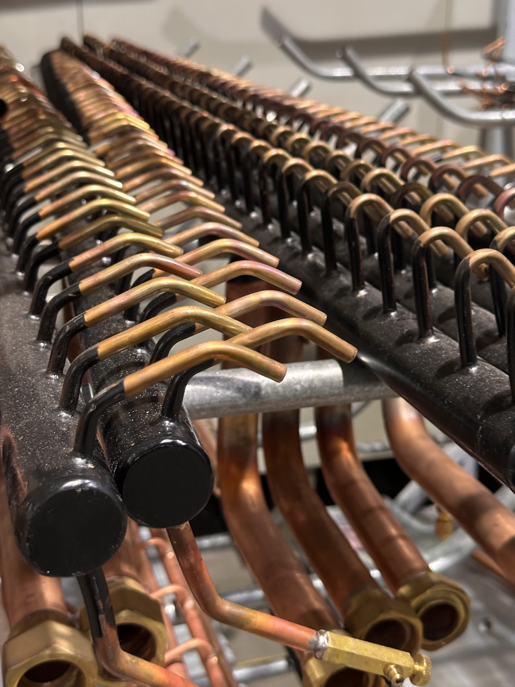

I like photographing places, machines, sports, and moments that feel worth keeping. This is a small and growing collection rather than a formal photography portfolio.

I’m drawn to details: the geometry of a machine, the atmosphere of a stadium, the view from an aircraft, or an ordinary scene that becomes interesting from the right angle.


Not everything I photograph needs to become a project. Sometimes I just want to remember what caught my attention.